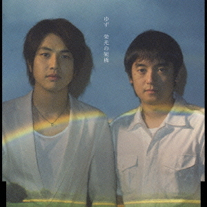
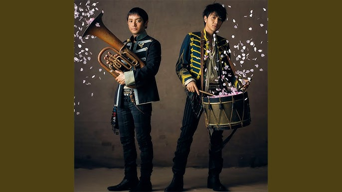
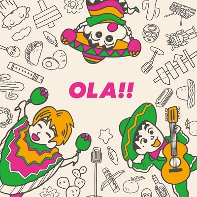

おすすめの音楽
GET BACK
2025年リリース。最新曲で、テレビアニメ「ポケットモンスター」のオープニングテーマソング。

夏色
1998年リリースのメジャーデビューシングル。爽やかなメロディと疾走感が、夏の季節にとてもぴったりな楽曲です。

栄光の架橋
2004年リリース。アテネオリンピックのNHKテーマソングとして多くの人々の心に響いた名曲です。今でもカラオケの上位などに入るなど幅広い世代に愛されています。

桜会
2010年にリリース。桜の季節の別れと再会を歌った、叙情的なバラード。儚く美しい桜に、再会を願う切ない思いを重ねた、非常に文学的で詩的な歌詞が特徴な楽曲です。

友～旅立ちの時
2013年に発表されたシングルで、別れと旅立ちをテーマにした、心温まる感動的なバラードです。卒業式や送別会の定番曲として、幅広い世代に歌い継がれています。

OLA!!
2015年リリース。映画「クレヨンしんちゃん」の主題歌として制作され、サンバ調の陽気で明るい楽曲です。

タッタ
2017年に配信リリースされた楽曲です。フジテレビ系バラエティ番組『めちゃ×2イケてるッ!』のテーマソング。軽快で跳ねるようなリズムと、聴いている人が思わず口ずさんでしまうようなシンプルなフレーズが特徴な楽曲です。

尤(ゆう)
2025年リリース。最新曲で、10月から放送のテレビアニメ「ポケットモンスター エピソード:メガシンカ」の主題歌。